一、开场：外汇市场是"衍生品横行"的市场
课程开始先纠正一个常见误解：我们以为外汇市场是"现货市场"，但实际上它是衍生品横行的市场。
- 整个外汇市场超过83%的交易都是衍生品，真正的现货交易只占27%左右（PPT饼图中蓝色"现货"部分）。
- 其中远期合约和掉期合约的成交额占比最大，合计占到整个外汇市场的2/3以上。
- 为什么先讲远期合约？因为远期是掉期的基础，结构相对最简单：远期听不懂，掉期肯定听不懂；远期听懂，掉期就是它的"增强版"（多一个基差）。
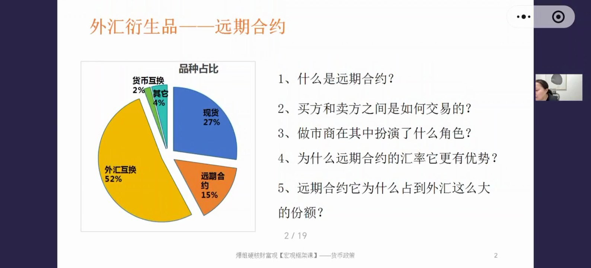
本期五个核心问题：① 什么是远期合约？② 买方和卖方之间是如何交易的？③ 做市商在其中扮演了什么角色？④ 为什么远期合约的汇率更有优势？⑤ 远期合约为什么占到外汇这么大的份额？
二、什么是远期合约：锁定未来的确定性
官方定义：远期合约（Forward Contract）是外汇市场中一种常见的衍生品工具，由买卖双方协商签订，约定在未来的某一个日期，以预先确定的汇率、币种和金额进行货币交割。
人话解释：今天就和对手盘签好协议、约定好汇率，不管未来市场怎么变，双方都按现在谈好的汇率交换货币——而不是等到未来再随行就市。核心目的就三个字：确定性。
- 好处：最大程度避开汇率忽上忽下的风险，把不确定变成确定。
- 注意：确定性 ≠ 套利，它不能保证"旱涝保收"——如果人民币贬值（7.1/7.2），你按锁定的6.9换就占便宜；如果人民币升值（6.8/6.7），你按6.9换反而吃亏。
- 它更像是买保险：没人买保险是为了赚钱，而是为了抵抗风险，保证主业经营的收入、成本、利润不出现大波动。
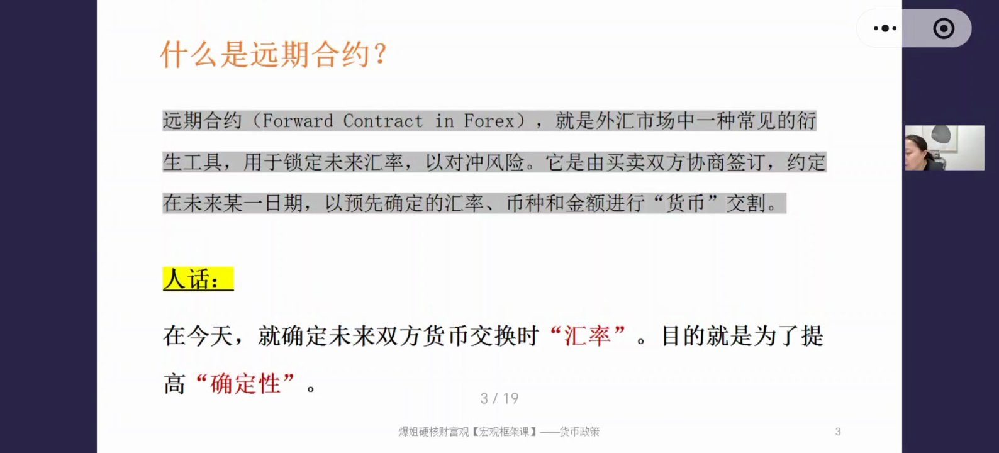
三、案例：手机厂商的汇率顾虑
假设场景：你是一家手机厂商，签了一份采购合同，计划3个月后从美国购买100万美元的芯片（USD/CNY=7，即1美元兑换7元人民币）。
- 顾虑：万一3个月后美元升值到7.1、7.2，同样换100万美元，就要掏出更多人民币，采购成本被汇率吃掉。
- 解法：去银行买一张锁定期3个月的远期合约（假设银行报价6.9）——约定3个月后无论市场汇率怎么变，银行都按6.9给你换美元。
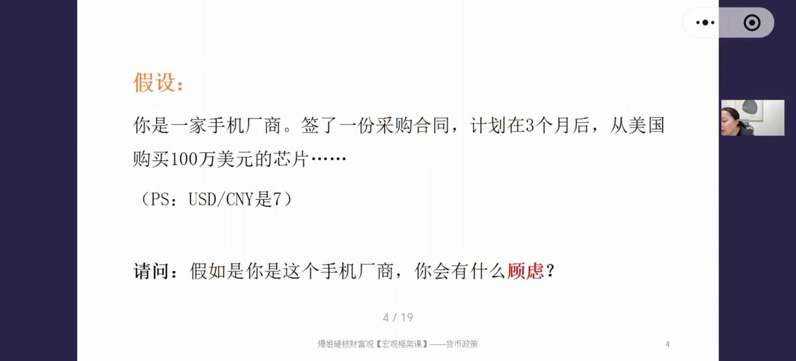
所以远期合约带给企业的最大好处是确定性，让企业可以提前做好财务规划；一般只有做国际生意的大公司才用得比较多。
四、四个疑问：谁买、谁卖、优势、份额
讲完定义，课程抛出四个疑问，作为后半部分的主线：
- 到底什么样的主体会去"买"远期合约？
- 到底又是谁在"卖"远期合约？
- 为什么远期合约的汇率更有优势？
- 远期合约为什么占到外汇这么大的份额？
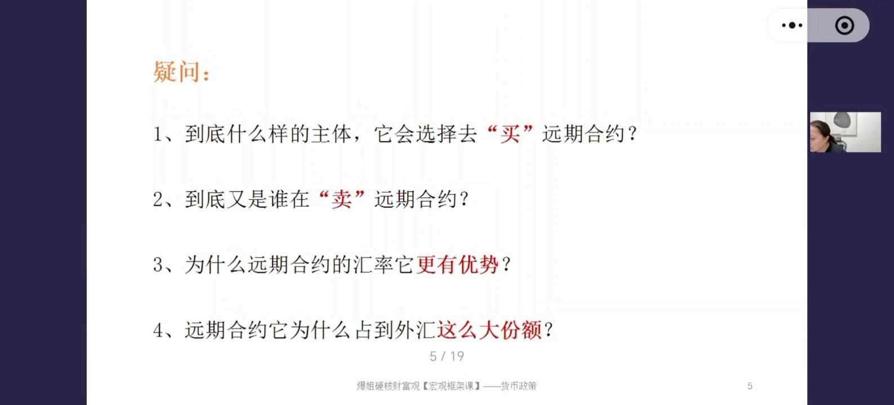
五、谁在买：三类主体
第一类：进出口企业。用远期合约锁定汇率，确保商品/服务的利润稳定可预期——不是为了赚汇率差，而是为了自己的主业。
第二类：跨国公司（如微软、苹果）。在中国赚钱、向海外子公司汇款或支付费用，经常面对汇兑风险，用远期合约管理跨境利润汇回、费用支付中的汇率波动。
第三类：投资基金。组合里持有外币资产（海外股票、债券等），用远期合约对冲汇率风险。
例子（日本国债基金）：国内基金要投日本国债，先把人民币换成日元再买日债。但日元相对人民币有较大的贬值风险，海外资产净值换成人民币显示时会明显缩水。基金经理可以买一张人民币兑日元的远期合约，锁定未来换汇汇率，规避汇率波动对净值的影响。
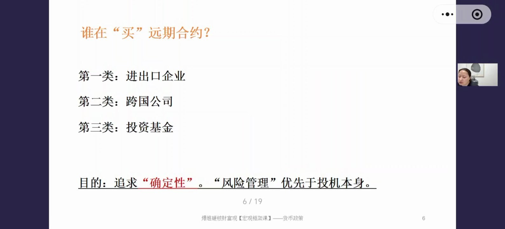
- 三类主体都是追求确定性、风险管理优先于投机，和下一节要讲的"掉期合约"（金融机构套利为主）不同。
- 补充：买远期合约过程中仍可能赚到额外汇率差（比如现在即期7、银行报价远期6.9，买下合约当下就"赚"了），但赚钱不是主要目的。
六、谁在卖（一）：第一类 = 需求相反的买方
有人买就一定有人卖。卖方主要有两大类：
- 第一类：就是买远期合约的那三类主体——进出口企业、跨国公司、投资基金，只要交易方向正好相反，就变成了卖方（比如买方用人民币换美元，卖方就用美元换人民币）。
- 第二类：做市商（下一节讲）。
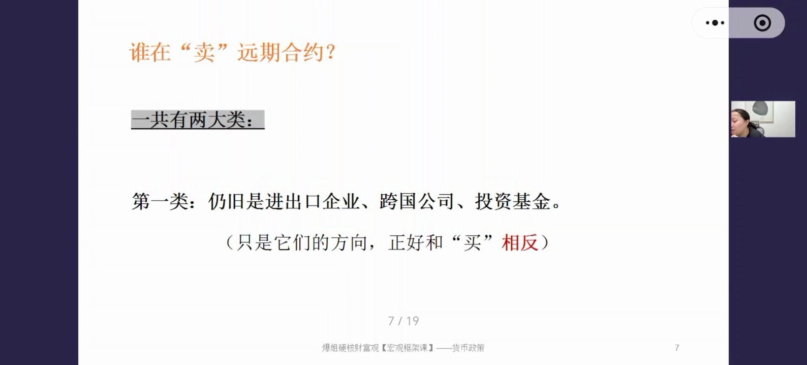
买方/卖方方向判定规则（重点、绕）
买方规则：货币对中哪个货币在前，就表示未来用后面的货币兑换成前面的货币。例如 USD/CNY——USD在前，作为买方时表示未来用人民币换美元。
卖方规则：角色反过来——未来换入的货币放在后边。卖 USD/CNY 合约 = 未来用美元换人民币。
- 例子1（中国厂商）：要从美国进口芯片，未来用人民币换美元 → 作为买方买一张 USD/CNY 远期合约。
- 例子2（苹果公司）：把国内组装的手机卖到美国，用美元换人民币 → 作为卖方卖出一张 USD/CNY 合约。
- 理想情况下，双方期限、汇率、金额都一致就能直接撮合；但现实中需求很难严丝合缝匹配——这也引出做市商存在的必要。
七、谁在卖（二）：做市商
当市场出现"想买的人很多、没有足够的卖方"时，做市商就出场了。
- 做市商主要是银行：银行既是买卖双方的撮合方；一旦缺少对手盘，银行自己可以直接下场当卖方，提供流动性和连续报价。
- 非银机构（券商等）在做市商中的占比今年已到10%-15%，但整体上银行仍是绝对主力。
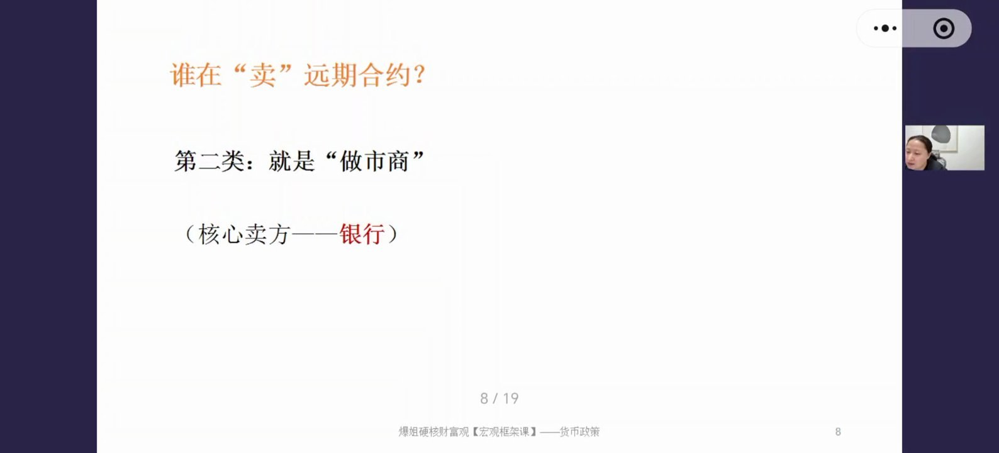
八、银行如何避险：靠对冲
逻辑好的人马上会问：银行自己没有真实贸易业务，本来只是撮合方，现在以做市商身份当对手盘，岂不是要承受汇率风险？
答案：银行主要靠对冲来规避风险。具体操作见下一节案例——借入本币 → 即期换成外币 → 存入外币定存，把未来汇率波动的敞口完全对冲掉。
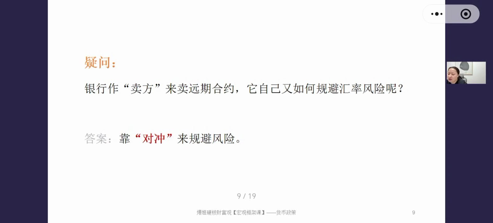
九、案例：进口商A与银行的完整对冲路径
前提：USD/CNY=1:7；进口商A三个月后需要用美元，想用人民币换出1亿美元；作为买方，他要买一张3个月的远期合约。请问银行作为卖方，应该如何报价才能确保自己的风险被对冲掉？
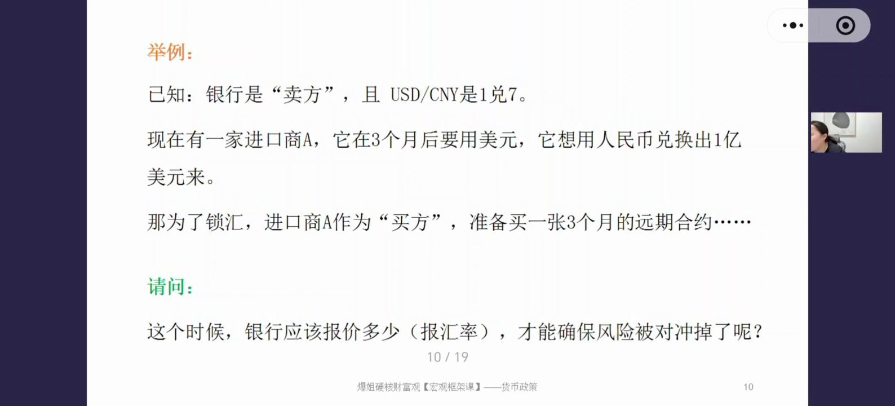
银行的操作路径（一定要记住，后面所有计算都围绕它展开）
- 先借出7亿人民币；
- 在即期市场（现在的现货汇率市场）把7亿人民币换成1亿美元——现在就换，不存在未来再换的汇率风险；
- 把1亿美元存入3个月美元定存；
- 3个月后合约到期：进口商给银行7亿人民币，银行给进口商1亿美元；
- 银行拿到人民币后，把7亿人民币还掉借款——循环走完。
流程走完了，但还留着一个关键问题：这张远期合约的汇率到底应该报多少？要算清楚，就得给银行算一笔账。
十、定价计算：借7亿换1亿美元的成本与收益
为了好算，假设：人民币借款利率年化2%，3个月美元定存年化4%。
3个月后银行须还的人民币利息：7亿 × 2% ÷ 4 = 0.035亿 = 350万人民币（年化利率用3个月，所以要除以4）
3个月美元定存的利息收入：1亿 × 4% ÷ 4 = 0.01亿 = 100万美元
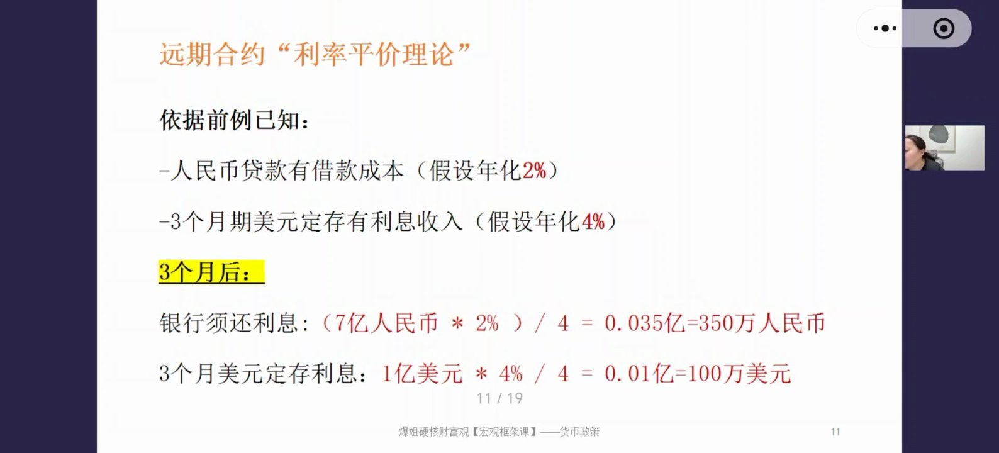
成本350万人民币、收益100万美元——两者相减，银行其实还能赚钱。但报价还没算出来。
十一、报价计算：远期汇率6.9654怎么来的
有一件事是确定的：3个月后进口商要1亿美元。所以合约报价要围绕这1亿美元推导。
第1步：需要多少本金？美元定存年化4%（折合3个月1%）：X × (1+1%) = 1亿 → X = 9901万美元
第2步：按即期汇率7，银行需要借多少人民币？9901万 × 7 = 6.9307亿人民币
第3步：加上人民币借款成本（年化2%，用3个月）：6.9307亿 +（6.9307亿 × 2% ÷ 4）= 6.9654亿人民币
第4步：合约报价汇率 = 6.9654亿 ÷ 1亿 = 6.9654
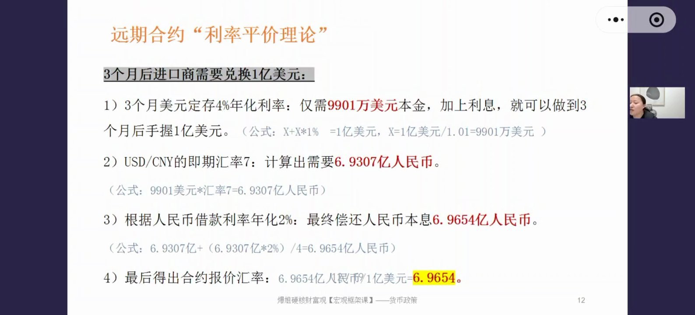
关键对比：现在即期汇率是7，远期合约报价只要6.9654——同样的1亿美元，用远期合约只需更少的人民币，合约里人民币是升值的。
十二、核心结论：利率高的货币，远期贬值
这个计算过程就是利率平价理论，结论必须掌握（它直接决定你未来怎么看海外汇率市场）：
在远期合约里，利率更高的那一方货币，在未来是贬值的。
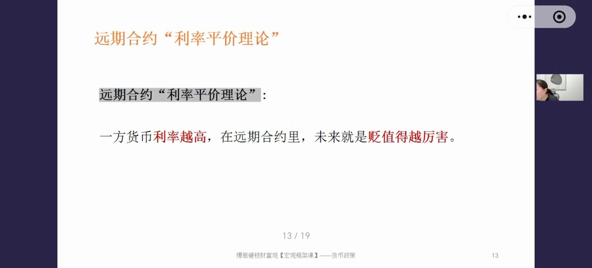
- 原因：美元利率高（3个月定存给4%），存同样金额用不到那么多本金，折算回人民币就少了——所以远期里美元贬值、人民币升值。
- 应用：美国利率环境更高时，用远期合约换美元更划算；中国利率更高时，用即期换汇更划算。
- 注意别混淆："合约里美元贬值"不代表即期市场美元就贬值——合约定价和现实汇率是两回事。
双刃剑：远期交易会反作用于即期汇率
银行对冲的第一步是"借7亿人民币 → 即期市场换成1亿美元"，也就是在即期市场卖出人民币、买入美元。卖人民币的人多了、金额大了，即期人民币就会承压贬值——这是下一章"远期对即期影响"的伏笔。
十三、数据验证：外汇掉期报价曲线
课程从中国货币网截取了真实报价曲线来佐证上面的结论（用外汇掉期曲线代替远期曲线，二者逻辑、趋势一致）。
- 看图方法：纵轴是TIPS（1 TIPS = 0.0001），为正代表升值、为负代表贬值；横轴是期限，越往后期限越长。
- USD/CNY曲线：期限越长，相同美元能兑换的人民币越少（曲线向下）→ 美元远期贬值 ✓（现实中美国利率比中国高，与结论一致）
- JPY/CNY曲线：方向正好相反（曲线向上）→ 期限越长人民币越贬值、日元越升值 ✓（日本利率低于中国，与结论一致）
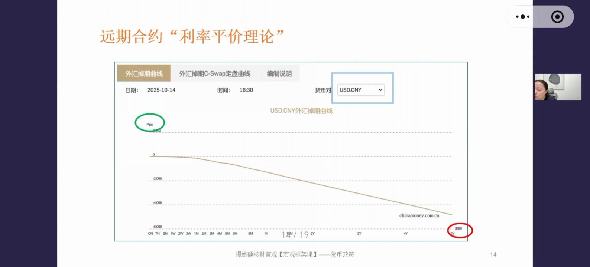
掌握方法后万变不离其宗——看到任何货币对报价曲线，都能判断谁在远期升值、谁在贬值。
十四、银行怎么赚钱：手续费 + 价差
弹幕一直有人问：银行做市商到底赚什么钱？两块：
- 手续费：每笔交易抽佣，无需多言。
- 价差：同一货币对买入价和卖出价之间的差。例如美元兑人民币，买入价与卖出价差约0.071（约1%）；欧元兑人民币价差约0.165（约2%）。远期合约里同样存在价差。
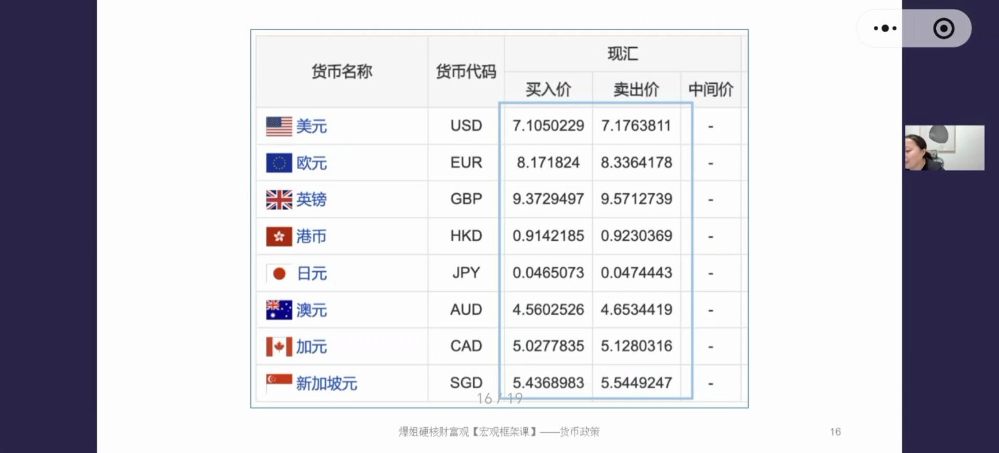
银行核心做的是撮合生意；只有当市场真的缺少对手盘时，才下场做市，提供流动性和连续报价。
十五、远期交易对即期汇率的影响
远期合约的交易会不会影响即期汇率？分两种情况：
- 第一种：买卖双方需求对等——买方、卖方在银行体系内直接撮合完成交易，双方根本不用跑到现货市场买卖，对即期汇率没有影响。
- 第二种：买卖双方需求不对等（比如买方很多、卖方很少）——银行下场做市当卖方，为对冲风险在即期市场借人民币换外币（卖出人民币、买入外币），必然导致即期人民币贬值，即期汇率受到扰动。
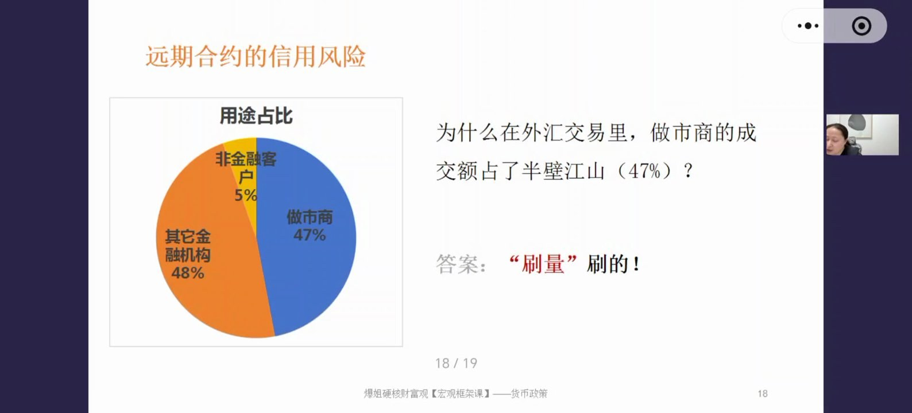
十六、信用风险与"刷量"：成交额放大的秘密
远期合约有没有风险？肯定有——信用风险。比如银行作为卖方先动作（借7亿人民币 → 换成1亿美元 → 存定存），结果3个月后买方违约不履约（毁约、说没货了），1亿美元就砸在自己手里；再换回人民币又面临汇率波动。
怎么规避：银行间市场转让
- 银行A担心买方违约，只愿承担1000万美元的风险 → 去银行间市场再买一张9000万美元的远期合约，把9000万的风险转给其他做市商（同时利润也转出去一部分）；
- 接下9000万的银行B也担心 → 再买一张8000万美元的合约；
- 银行C接下8000万也怕 → 再买7000万美元的合约……层层循环。
结果：每一层转让都是一笔新交易。原来1块钱的真实需求，因为做市商"风险共担"的滚动操作，最终把成交额放大到5-6倍——这就解释了外汇衍生品市场为什么那么大（汇市、债市同理）。
补充：美国降息后美元为什么可能贬值
美国利率仍比中国高，理论上美元应继续升值，但降息后美元反而可能贬值——因为市场上存在大量存量合约，原来按4.25%定价的合约要重新定价、全部换手，汇率被调整到匹配新定价逻辑的位置。金融世界不能用简单的二元逻辑理解。
十七、课程总结：远期合约全景
第一，谁在买远期合约？三类角色——进出口企业、跨国公司、投资基金。目的都是追求确定性、不想承担汇率波动风险，不是做套利（套利是下节掉期合约的事）。锁定成本 → 确定收入 → 确定利润。
第二，谁在卖远期合约？两类——① 上面三类主体中需求方向相反者；② 做市商（以银行为主）。
第三，为什么远期汇率更有优势？利率高的货币在远期合约中贬值。拿美元举例：美元利率高于人民币，用远期合约换美元，可以花更少人民币买到相同美元——低息换高息，用远期划算；反过来（我们比对方利率高），就用即期。关键是搞清楚货币对里谁的利率高、谁的利率低。
第四，做市商扮演什么角色？① 提供流动性（大家都想买时没人卖，市场就废了）；② 提供连续报价；③ 合约本身有价值（低息货币兑换高息货币，通过远期更划算）；④ 充当对手方时，因"风险共担"的滚动交易产生刷量，把外汇成交额放大数倍——债券市场同理，都是正常交易行为。
普通人避坑提示：外汇市场普通人根本碰不了。普通人能触达的最高境界就是"用人民币换美元 → 买美元资产"（换汇只是投资动作），绝不能为了赚利率差去换汇——买入卖出价差、手续费、汇率波动叠加，本来确定的存款就变成了风险投资。学习这些不是让你当下买卖什么，而是构建判断世界的认知基础。
课程后续安排：下一节讲掉期合约（金融机构套利工具、涉及基差，比远期复杂）；再下一节讲汇率对各国资产的影响；之后做一次货币政策实战总结课，然后进入经济周期模块。本期内容前后勾稽，务必复听、盖住公式手动演算。
课程知识卡片（专业版）
以下为课程配套的专业版知识卡片，标题为"货币政策第11期：汇率（4）——外汇衍生品交易：远期合约深度解析"，汇总了本期核心知识点的完整框架。

专业版卡片文字摘要
- 课程简介：本期剖析主导外汇市场的核心工具——金融衍生品（远期合约和掉期合约合计占外汇市场2/3以上）。从结构最简单的远期合约入手（掉期留到下一期），拆解其定义、交易机制、定价逻辑与市场影响；重点阐述做市商如何通过利率平价理论进行风险对冲和报价，并揭示"风险共担"模式如何创造庞大的市场交易量。学完本课可理解外汇市场专业化运作的底层逻辑，以及它为何不是普通投资者的战场。
- 知识点1：什么是远期合约？官方定义——由买卖双方签订，约定在未来某个日期，以预先确定的汇率、币种和金额进行货币交割的协议。核心价值——本质并非套利，而是为了获得确定性：通过今天锁定未来交易价格，企业可规避汇率波动风险，确保主营业务的收入、成本、利润稳定。实践运用：远期合约功能上类似"保险"，企业购买是为了对冲主业经营的汇率风险，风险管理属性远大于投机属性。
- 知识点2：远期合约的交易主体与角色。买方——①进出口企业（锁定未来货款的成本或收入）；②跨国公司MNCs（管理跨境利润汇回或费用支付的汇兑风险）；③投资基金（对冲持有的外币资产——海外股票、债券——的汇率风险）。卖方——①需求相反的买方（与买方需求恰好相反的企业或基金）；②做市商（主要是银行，市场缺乏自然对手盘时提供流动性）。实践运用：买卖双方的角色是相对的——A买入USD/CNY合约（未来用CNY换USD），对手盘B自动成为卖方，其真实需求是买入CNY/USD合约（未来用USD换CNY）。做市商的存在确保即便没有完美对手盘，交易也能达成。
- 知识点3：做市商的定价逻辑：利率平价理论。核心逻辑——远期合约报价并非随意制定，而是基于两种货币的利率差精确计算，实现无风险对冲。对冲操作——银行作为做市商卖出远期合约的同时，立即在即期市场借入低息货币、换成高息货币并存起来吃利息，用利息差覆盖成本并锁定利润。核心结论——在远期合约中，利率更高的那一方货币，在未来的报价中是贬值的。实践运用：由于美元利率高于人民币，3个月USD/CNY远期合约报价低于即期汇率（即期7.0、远期约6.96）——对需要把低息货币换成高息货币的企业，用远期合约在成本上更有优势。
- 知识点4：对即期市场的影响与风险共担机制。对即期汇率的影响——需求对等时无影响（买卖双方在银行体系内直接撮合，不涉及即期市场操作）；需求不对等时有影响（做市商下场对冲，在即期市场大量卖出一种货币、买入另一种，直接导致即期汇率朝反方向波动——如卖出CNY则CNY即期汇率承压）。风险共担与"刷量"——做市商为规避单一对手的巨大信用风险，会把大额合约层层转让、分包给其他做市商，每一层转让都是新交易，一笔真实业务需求最终创造5-6倍交易量。实践运用：庞大交易量背后是专业机构间精密的风险分散网络，其内在的"对冲""定价""风险转移"逻辑是普通投资者无法企及的。
- 课程总结：远期合约作为外汇市场的基础衍生品，核心功能是提供确定性，帮助大型企业和机构管理汇率风险；定价遵循利率平价理论（高利率货币远期"贬值"），为跨币种交易提供成本优化可能；当市场缺乏自然对手盘时，做市商通过在即期市场的对冲操作提供流动性，既影响即期汇率，又通过风险共担的层层转包创造出远超真实需求数倍的交易量。整个体系的精密与复杂，决定了外汇市场是专业机构的领域，而非个人投机场所。
课程知识卡片（极简版）
以下为极简版知识卡片（副标题：揭秘外汇大佬的玩法——什么是远期合约？），用问答形式快速回顾核心概念。
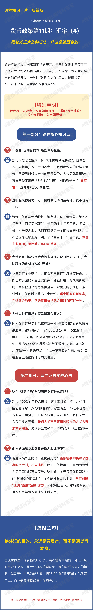
极简版卡片文字摘要
- Q：什么是"远期合约"？听起来好复杂。
A：可以把它理解成一份"未来价格锁定协议"。就像去超市签个合同，约定三个月后用今天的价格买大米，不管到时候大米涨价还是降价。大公司就是用这个方法锁定未来换外汇的"价格"，图的就是"确定性"，才能安心做生意。
- Q：这听起来像赌博，万一汇率对我有利，我不就亏了吗？
A：没错，可能会"错过"一笔意外之财。但大公司想的不是赌博，而是买"保险"——主业是卖手机、卖设备，不是炒外汇。他们宁愿锁定一个能接受的利润，也不想因为汇率上蹿下跳、一年白干。保住主业利润远比赌汇率波动重要。
- Q：为什么银行给我的未来换汇价（比如6.9），会比现在的价格（7.0）还好？
A：背后有个小窍门，关键看两国银行利息谁高谁低。比如美国利息比我们高，银行计算未来价格时就把利息差算进去，给美元的价格打个"折扣"。简单记一个结论：哪个国家的利息高，在远期合约里它的货币价格就会相对"便宜"一些（即远期贬值）。
- Q：为什么外汇市场的交易量那么吓人？
A：因为银行这些专业玩家在玩"击鼓传花"式的风险分散游戏。银行A接了一个1亿美元的大单心里发怵，就把9000万美元的风险"卖"给银行B；银行B也害怕，又把8000万的风险"卖"给银行C。每一笔"卖出"都是一次新交易，所以一笔真实的生意最后能在账面上滚出好几倍的交易量。
- Q：这个"远期合约"对我家理财有什么用吗？
A：对我们99%的普通人来说，这个工具用不上，但理解它能给你一双"火眼金睛"——外汇市场是专业人士用复杂工具玩的游戏，这从根本上解释了为什么普通人千万不要用换现金的方式去赌汇率涨跌。
- Q：那我到底应该怎么看待换外汇这件事？
A：普通人换外汇的唯一正确姿势是：当你需要购买那个国家的资产时才去换钱。比如换美元，是因为计划买美国的股票或债券——美元只是投资路上的"过路费"和"工具"，不是投资目标本身。千万别把"工具"当"宝藏"来炒，银行的买卖差价和手续费会让你未赚先亏。
- 爆姐金句："换外汇的目的，永远是买资产，而不是赌货币本身。金融世界里，你看懂的叫投资，看不懂的叫赌博。外汇市场水深不见底，是专业机构的角斗场。普通人最好的策略，就是守住自己的能力圈，把钱投在我们能理解的优质资产上。"